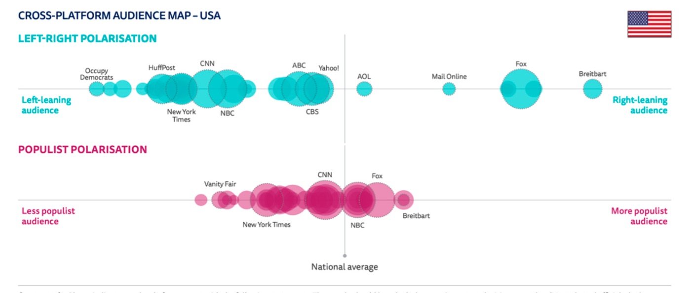

La investigación examina las noticias sobre el cambio climático en distintos medios mediante el análisis de la agenda setting y el framing, en el contexto de la construcción del discurso mediático. Los medios han tenido un papel relevante en la lucha simbólica por las imágenes del cambio climático. La opinión pública polarizada sobre el cambio climático en Estados Unidos —que llevó al Gobierno de Trump a retirarse del Acuerdo de París y a revocar políticas ambientales— se analiza a través de la cobertura que los medios de tendencia republicana y demócrata dieron a la crisis climática durante los 12 días de la Cumbre del Clima de 2019. Se identificaron, analizaron y contrastaron 189 noticias publicadas por Fox News, Breitbart, CNN y The New York Times. Los resultados revelan que solo los medios de tendencia republicana difundieron noticias negacionistas. Breitbart publicó el mayor número de piezas de la muestra, un 71 % de ellas negacionistas, con tácticas como la espectacularización del fenómeno climático, ataques ad hominem a ecologistas y políticos, la asociación de las iniciativas ambientales con el «ecofascismo» o la «izquierda radical», la falacia de la verdad a medias y fuentes cuestionables vinculadas a la industria de los combustibles fósiles. Fox News apenas abordó el tema durante la cumbre. Los medios de tendencia demócrata no publicaron noticias negacionistas; su información y opinión transmitieron iniciativas ambientales y las consecuencias del cambio climático.
Artículos en revistas · 2021
Public Opinion about Climate Change in United States, Partisan View and Media Coverage of the 2019 United Nations Climate Change Conference (COP 25) in Madrid
Sustainability, 13(7), 3926
